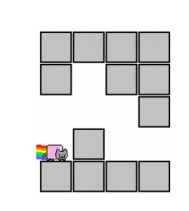

太空猫(SpaceCat)是一款画面精致、玩法有趣的休闲游戏，你需要控制一只坐在迷你飞碟上的猫咪在太空里不断探
索，让大家看看你能飞得多远。游戏地图可以看成一个二维的网格图，上下是两段障碍物。在游戏的一开始，太空
猫位于地图最左边的下边界之上，且重力方向向下。
在每个时刻，你可以用手指点击屏幕，翻转重力的方向，或者通过遥感控制太空猫往左或往右移动。每次翻转重力
方向时，你需要消耗的能量值等于上下底边之间的高度差。在左右移动的时候，太空猫可以下降到对应重力方向更
低的位置，但不能往上爬。当然，太空猫也不能穿墙而过。在重力翻转的过程中，直到碰到地面之前，你都不能操
控太空猫左右移动。太空猫的终点位于地图的最右端的下底边之上，请计算为了让太空猫到达终点，需要消耗能量
的最小值。
